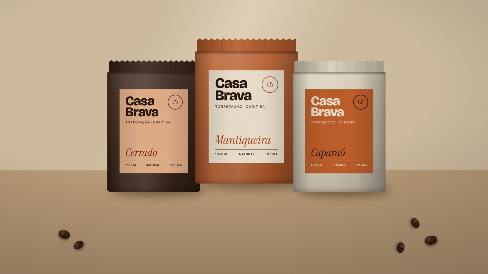

Casa Brava

- Contexto
- A torrefação vendia para cafeterias, mas queria chegar à prateleira. As embalagens antigas eram iguais às de qualquer café industrial.
- Processo
- Visitas à torra, entrevistas com baristas parceiros e um sistema de rótulos em que a origem do grão é o elemento principal.
- Entrega
- Marca, sistema de rótulos para 9 origens, sacolas, carimbos e sinalização da loja.